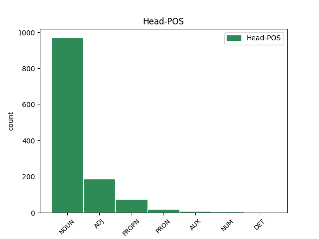

Distribution of features within this leaf

Agreement Rules sorted by frequency.
- When the dependent token is the modifer(mod) of the head token, and the head token is NOUN and the dependent token is VERB.
1 ἐάν _ _ _ _ 0 _ _ _
2 τις _ _ _ _ 0 _ _ _
3 ἐπιθῇ _ _ _ _ 0 _ _ _
4 ἐπ’ _ _ _ _ 0 _ _ _
5 αὐτά _ _ _ _ 0 _ _ _
6 ἐπιθήσει _ _ _ _ 0 _ _ _
7 ἐπ’ _ _ _ _ 0 _ _ _
8 αὐτὸν _ _ _ _ 0 _ _ _
9 ὁ _ _ _ _ 0 _ _ _
10 θεὸς _ _ _ _ 0 _ _ _
11 τὰς _ _ _ _ 0 _ _ _
12 πληγὰς πληγή NOUN Nb Case=Acc|Gender=Fem|Number=Plur 0 _ _ _
13 τὰς _ _ _ _ 0 _ _ _
14 γεγραμμένας γράφω VERB V- Aspect=Perf|Case=Acc|Gender=Fem|Number=Plur|Tense=Past|VerbForm=Part|Voice=Pass 12 mod _ ref=REV_22.18
15 ἐν _ _ _ _ 0 _ _ _
16 τῷ _ _ _ _ 0 _ _ _
17 βιβλίῳ _ _ _ _ 0 _ _ _
18 τούτῳ _ _ _ _ 0 _ _ _
1 μακάριοι _ _ _ _ 0 _ _ _
2 οἱ _ _ _ _ 0 _ _ _
3 νεκροὶ νεκρός ADJ A- Case=Nom|Degree=Pos|Gender=Masc|Number=Plur 0 _ _ _
4 οἱ _ _ _ _ 0 _ _ _
5 ἐν _ _ _ _ 0 _ _ _
6 κυρίῳ _ _ _ _ 0 _ _ _
7 ἀποθνῄσκοντες ἀποθνῄσκω VERB V- Case=Nom|Gender=Masc|Number=Plur|Tense=Pres|VerbForm=Part|Voice=Act 3 mod _ ref=REV_14.13
8 ἀπάρτι _ _ _ _ 0 _ _ _
1 Διαμαρτύρομαι _ _ _ _ 0 _ _ _
2 ἐνώπιον _ _ _ _ 0 _ _ _
3 τοῦ _ _ _ _ 0 _ _ _
4 θεοῦ _ _ _ _ 0 _ _ _
5 καὶ _ _ _ _ 0 _ _ _
6 Χριστοῦ Χριστός PROPN Ne Case=Gen|Gender=Masc|Number=Sing 0 _ _ _
7 Ἰησοῦ _ _ _ _ 0 _ _ _
8 τοῦ _ _ _ _ 0 _ _ _
9 μέλλοντος μέλλω VERB V- Case=Gen|Gender=Masc,Neut|Number=Sing|Tense=Pres|VerbForm=Part|Voice=Act 6 mod _ ref=2TIM_4.1
10 κρίνειν _ _ _ _ 0 _ _ _
11 ζῶντας _ _ _ _ 0 _ _ _
12 καὶ _ _ _ _ 0 _ _ _
13 νεκρούς _ _ _ _ 0 _ _ _
14 καὶ _ _ _ _ 0 _ _ _
15 τὴν _ _ _ _ 0 _ _ _
16 ἐπιφάνειαν _ _ _ _ 0 _ _ _
17 αὐτοῦ _ _ _ _ 0 _ _ _
18 καὶ _ _ _ _ 0 _ _ _
19 τὴν _ _ _ _ 0 _ _ _
20 βασιλείαν _ _ _ _ 0 _ _ _
21 αὐτοῦ _ _ _ _ 0 _ _ _
1 μακάριοι μακάριος ADJ A- Case=Nom|Degree=Pos|Gender=Masc|Number=Plur 0 _ _ _
2 οἱ _ _ _ _ 0 _ _ _
3 πλύνοντες πλύνω VERB V- Case=Nom|Gender=Masc|Number=Plur|Tense=Pres|VerbForm=Part|Voice=Act 1 subj _ ref=REV_22.14
4 τὰς _ _ _ _ 0 _ _ _
5 στολὰς _ _ _ _ 0 _ _ _
6 αὐτῶν _ _ _ _ 0 _ _ _
7 ἵνα _ _ _ _ 0 _ _ _
8 ἔσται _ _ _ _ 0 _ _ _
9 ἡ _ _ _ _ 0 _ _ _
10 ἐξουσία _ _ _ _ 0 _ _ _
11 αὐτῶν _ _ _ _ 0 _ _ _
12 ἐπὶ _ _ _ _ 0 _ _ _
13 τὸ _ _ _ _ 0 _ _ _
14 ξύλον _ _ _ _ 0 _ _ _
15 τῆς _ _ _ _ 0 _ _ _
16 ζωῆς _ _ _ _ 0 _ _ _
17 καὶ _ _ _ _ 0 _ _ _
18 τοῖς _ _ _ _ 0 _ _ _
19 πυλῶσιν _ _ _ _ 0 _ _ _
20 εἰσέλθωσιν _ _ _ _ 0 _ _ _
21 εἰς _ _ _ _ 0 _ _ _
22 τὴν _ _ _ _ 0 _ _ _
23 πόλιν _ _ _ _ 0 _ _ _
1 καὶ _ _ _ _ 0 _ _ _
2 ἴδον _ _ _ _ 0 _ _ _
3 καὶ _ _ _ _ 0 _ _ _
4 ἰδοὺ _ _ _ _ 0 _ _ _
5 ἵππος ἵππος NOUN Nb Case=Nom|Gender=Masc|Number=Sing 0 _ _ _
6 μέλας _ _ _ _ 0 _ _ _
7 καὶ _ _ _ _ 0 _ _ _
8 ὁ _ _ _ _ 0 _ _ _
9 καθήμενος κάθημαι VERB V- Case=Nom|Gender=Masc|Number=Sing|Tense=Pres|VerbForm=Part|Voice=Mid 5 orphan _ ref=REV_6.5
10 ἐπ’ _ _ _ _ 0 _ _ _
11 αὐτὸν _ _ _ _ 0 _ _ _
12 ἔχων _ _ _ _ 0 _ _ _
13 ζυγὸν _ _ _ _ 0 _ _ _
14 ἐν _ _ _ _ 0 _ _ _
15 τῇ _ _ _ _ 0 _ _ _
16 χειρὶ _ _ _ _ 0 _ _ _
17 αὐτοῦ _ _ _ _ 0 _ _ _
1 εἰρήνην _ _ _ _ 0 _ _ _
2 διώκετε _ _ _ _ 0 _ _ _
3 μετὰ _ _ _ _ 0 _ _ _
4 πάντων _ _ _ _ 0 _ _ _
5 καὶ _ _ _ _ 0 _ _ _
6 τὸν _ _ _ _ 0 _ _ _
7 ἁγιασμόν _ _ _ _ 0 _ _ _
8 οὗ _ _ _ _ 0 _ _ _
9 χωρὶς _ _ _ _ 0 _ _ _
10 οὐδεὶς _ _ _ _ 0 _ _ _
11 ὄψεται _ _ _ _ 0 _ _ _
12 τὸν _ _ _ _ 0 _ _ _
13 κύριον _ _ _ _ 0 _ _ _
14 ἐπισκοποῦντες _ _ _ _ 0 _ _ _
15 μή _ _ _ _ 0 _ _ _
16 τις τὶς ADJ Px Case=Nom|Gender=Masc|Number=Sing 0 _ _ _
17 ὑστερῶν ὑστερέω VERB V- Case=Nom|Gender=Masc|Number=Plur|Tense=Pres|VerbForm=Part|Voice=Act 16 orphan _ ref=HEB_12.15
18 ἀπὸ _ _ _ _ 0 _ _ _
19 τῆς _ _ _ _ 0 _ _ _
20 χάριτος _ _ _ _ 0 _ _ _
21 τοῦ _ _ _ _ 0 _ _ _
22 θεοῦ _ _ _ _ 0 _ _ _
23 μή _ _ _ _ 0 _ _ _
24 τις _ _ _ _ 0 _ _ _
25 ῥίζα _ _ _ _ 0 _ _ _
26 πικρίας _ _ _ _ 0 _ _ _
27 ἄνω _ _ _ _ 0 _ _ _
28 φύουσα _ _ _ _ 0 _ _ _
29 ἐνοχλῇ _ _ _ _ 0 _ _ _
30 καὶ _ _ _ _ 0 _ _ _
31 διὰ _ _ _ _ 0 _ _ _
32 ταύτης _ _ _ _ 0 _ _ _
33 μιανθῶσιν _ _ _ _ 0 _ _ _
34 οἱ _ _ _ _ 0 _ _ _
35 πολλοί _ _ _ _ 0 _ _ _
36 μή _ _ _ _ 0 _ _ _
37 τις _ _ _ _ 0 _ _ _
38 πόρνος _ _ _ _ 0 _ _ _
39 ἢ _ _ _ _ 0 _ _ _
40 βέβηλος _ _ _ _ 0 _ _ _
41 ὡς _ _ _ _ 0 _ _ _
42 Ἠσαῦ _ _ _ _ 0 _ _ _
43 ὃς _ _ _ _ 0 _ _ _
44 ἀντὶ _ _ _ _ 0 _ _ _
45 βρώσεως _ _ _ _ 0 _ _ _
46 μιᾶς _ _ _ _ 0 _ _ _
47 ἀπέδετο _ _ _ _ 0 _ _ _
48 τὰ _ _ _ _ 0 _ _ _
49 πρωτοτόκια _ _ _ _ 0 _ _ _
50 ἑαυτοῦ _ _ _ _ 0 _ _ _
1 πρὸς _ _ _ _ 0 _ _ _
2 ὃν ὅς PRON Pr Case=Acc|Gender=Masc|Number=Sing|PronType=Rel 0 _ _ _
3 προσερχόμενοι _ _ _ _ 0 _ _ _
4 λίθον _ _ _ _ 0 _ _ _
5 ζῶντα _ _ _ _ 0 _ _ _
6 ὑπὸ _ _ _ _ 0 _ _ _
7 ἀνθρώπων _ _ _ _ 0 _ _ _
8 μὲν _ _ _ _ 0 _ _ _
9 ἀποδεδοκιμασμένον ἀποδοκιμάζω VERB V- Aspect=Perf|Case=Acc|Gender=Masc|Number=Sing|Tense=Past|VerbForm=Part|Voice=Pass 2 mod _ ref=1PET_2.4
10 παρὰ _ _ _ _ 0 _ _ _
11 δὲ _ _ _ _ 0 _ _ _
12 θεῷ _ _ _ _ 0 _ _ _
13 ἐκλεκτὸν _ _ _ _ 0 _ _ _
14 ἔντιμον _ _ _ _ 0 _ _ _
15 καὶ _ _ _ _ 0 _ _ _
16 αὐτοὶ _ _ _ _ 0 _ _ _
17 ὡς _ _ _ _ 0 _ _ _
18 λίθοι _ _ _ _ 0 _ _ _
19 ζῶντες _ _ _ _ 0 _ _ _
20 οἰκοδομεῖσθε _ _ _ _ 0 _ _ _
21 οἶκος _ _ _ _ 0 _ _ _
22 πνευματικὸς _ _ _ _ 0 _ _ _
23 εἰς _ _ _ _ 0 _ _ _
24 ἱεράτευμα _ _ _ _ 0 _ _ _
25 ἅγιον _ _ _ _ 0 _ _ _
26 ἀνενέγκαι _ _ _ _ 0 _ _ _
27 πνευματικὰς _ _ _ _ 0 _ _ _
28 θυσίας _ _ _ _ 0 _ _ _
29 εὐπροσδέκτους _ _ _ _ 0 _ _ _
30 θεῷ _ _ _ _ 0 _ _ _
31 διὰ _ _ _ _ 0 _ _ _
32 Ἰησοῦ _ _ _ _ 0 _ _ _
33 Χριστοῦ _ _ _ _ 0 _ _ _
1 ἐκεῖ _ _ _ _ 0 _ _ _
2 ἔσται _ _ _ _ 0 _ _ _
3 ὁ _ _ _ _ 0 _ _ _
4 κλαυθμὸς _ _ _ _ 0 _ _ _
5 καὶ _ _ _ _ 0 _ _ _
6 ὁ _ _ _ _ 0 _ _ _
7 βρυγμὸς _ _ _ _ 0 _ _ _
8 τῶν _ _ _ _ 0 _ _ _
9 ὀδόντων _ _ _ _ 0 _ _ _
10 ὅταν _ _ _ _ 0 _ _ _
11 ὄψεσθε _ _ _ _ 0 _ _ _
12 Ἀβραὰμ _ _ _ _ 0 _ _ _
13 καὶ _ _ _ _ 0 _ _ _
14 Ἰσαὰκ _ _ _ _ 0 _ _ _
15 καὶ _ _ _ _ 0 _ _ _
16 Ἰακὼβ _ _ _ _ 0 _ _ _
17 καὶ _ _ _ _ 0 _ _ _
18 πάντας _ _ _ _ 0 _ _ _
19 τοὺς _ _ _ _ 0 _ _ _
20 προφήτας _ _ _ _ 0 _ _ _
21 ἐν _ _ _ _ 0 _ _ _
22 τῇ _ _ _ _ 0 _ _ _
23 βασιλείᾳ _ _ _ _ 0 _ _ _
24 τοῦ _ _ _ _ 0 _ _ _
25 θεοῦ _ _ _ _ 0 _ _ _
26 ὑμᾶς ὑμεῖς PRON Pp Case=Acc|Gender=Fem,Masc|Number=Plur|Person=2|PronType=Prs 0 _ _ _
27 δὲ _ _ _ _ 0 _ _ _
28 ἐκβαλλομένους ἐκβάλλω VERB V- Case=Acc|Gender=Masc|Number=Plur|Tense=Pres|VerbForm=Part|Voice=Pass 26 orphan _ ref=LUKE_13.28
29 ἔξω _ _ _ _ 0 _ _ _
1 αὗται _ _ _ _ 0 _ _ _
2 γάρ _ _ _ _ 0 _ _ _
3 εἰσιν _ _ _ _ 0 _ _ _
4 δύο _ _ _ _ 0 _ _ _
5 διαθῆκαι _ _ _ _ 0 _ _ _
6 μία εἷς NUM Ma Case=Nom|Gender=Fem|Number=Sing 0 _ _ _
7 μὲν _ _ _ _ 0 _ _ _
8 ἀπὸ _ _ _ _ 0 _ _ _
9 ὄρους _ _ _ _ 0 _ _ _
10 Σινᾶ _ _ _ _ 0 _ _ _
11 εἰς _ _ _ _ 0 _ _ _
12 δουλίαν _ _ _ _ 0 _ _ _
13 γεννῶσα γεννάω VERB V- Case=Nom|Gender=Fem|Number=Sing|Tense=Pres|VerbForm=Part|Voice=Act 6 mod _ ref=GAL_4.24
14 ἥτις _ _ _ _ 0 _ _ _
15 ἐστὶν _ _ _ _ 0 _ _ _
16 Ἄγαρ _ _ _ _ 0 _ _ _
1 καὶ _ _ _ _ 0 _ _ _
2 ὑμᾶς _ _ _ _ 0 _ _ _
3 ποτε _ _ _ _ 0 _ _ _
4 ὄντας εἰμί AUX V- Case=Acc|Gender=Masc|Number=Plur|Tense=Pres|VerbForm=Part|Voice=Act 0 _ _ _
5 ἀπηλλοτριωμένους ἀπαλλοτριόω VERB V- Aspect=Perf|Case=Acc|Gender=Masc|Number=Plur|Tense=Past|VerbForm=Part|Voice=Pass 4 comp:pred _ ref=COL_1.21
6 καὶ _ _ _ _ 0 _ _ _
7 ἐχθροὺς _ _ _ _ 0 _ _ _
8 τῇ _ _ _ _ 0 _ _ _
9 διανοίᾳ _ _ _ _ 0 _ _ _
10 ἐν _ _ _ _ 0 _ _ _
11 τοῖς _ _ _ _ 0 _ _ _
12 ἔργοις _ _ _ _ 0 _ _ _
13 τοῖς _ _ _ _ 0 _ _ _
14 πονηροῖς _ _ _ _ 0 _ _ _
15 νυνὶ _ _ _ _ 0 _ _ _
16 δὲ _ _ _ _ 0 _ _ _
17 ἀποκατήλλαξεν _ _ _ _ 0 _ _ _
18 ἐν _ _ _ _ 0 _ _ _
19 τῷ _ _ _ _ 0 _ _ _
20 σώματι _ _ _ _ 0 _ _ _
21 τῆς _ _ _ _ 0 _ _ _
22 σαρκὸς _ _ _ _ 0 _ _ _
23 αὐτοῦ _ _ _ _ 0 _ _ _
24 διὰ _ _ _ _ 0 _ _ _
25 τοῦ _ _ _ _ 0 _ _ _
26 θανάτου _ _ _ _ 0 _ _ _
27 παραστῆσαι _ _ _ _ 0 _ _ _
28 ὑμᾶς _ _ _ _ 0 _ _ _
29 ἁγίους _ _ _ _ 0 _ _ _
30 καὶ _ _ _ _ 0 _ _ _
31 ἀμώμους _ _ _ _ 0 _ _ _
32 καὶ _ _ _ _ 0 _ _ _
33 ἀνεγκλήτους _ _ _ _ 0 _ _ _
34 κατενώπιον _ _ _ _ 0 _ _ _
35 αὐτοῦ _ _ _ _ 0 _ _ _
36 εἴ _ _ _ _ 0 _ _ _
37 γε _ _ _ _ 0 _ _ _
38 ἐπιμένετε _ _ _ _ 0 _ _ _
39 τῇ _ _ _ _ 0 _ _ _
40 πίστει _ _ _ _ 0 _ _ _
41 τεθεμελιωμένοι _ _ _ _ 0 _ _ _
42 καὶ _ _ _ _ 0 _ _ _
43 ἑδραῖοι _ _ _ _ 0 _ _ _
44 καὶ _ _ _ _ 0 _ _ _
45 μὴ _ _ _ _ 0 _ _ _
46 μετακινούμενοι _ _ _ _ 0 _ _ _
47 ἀπὸ _ _ _ _ 0 _ _ _
48 τῆς _ _ _ _ 0 _ _ _
49 ἐλπίδος _ _ _ _ 0 _ _ _
50 τοῦ _ _ _ _ 0 _ _ _
51 εὐαγγελίου _ _ _ _ 0 _ _ _
52 οὗ _ _ _ _ 0 _ _ _
53 ἠκούσατε _ _ _ _ 0 _ _ _
54 τοῦ _ _ _ _ 0 _ _ _
55 κηρυχθέντος _ _ _ _ 0 _ _ _
56 ἐν _ _ _ _ 0 _ _ _
57 πάσῃ _ _ _ _ 0 _ _ _
58 κτίσει _ _ _ _ 0 _ _ _
59 τῇ _ _ _ _ 0 _ _ _
60 ὑπὸ _ _ _ _ 0 _ _ _
61 τὸν _ _ _ _ 0 _ _ _
62 οὐρανόν _ _ _ _ 0 _ _ _
63 οὗ _ _ _ _ 0 _ _ _
64 ἐγενόμην _ _ _ _ 0 _ _ _
65 ἐγὼ _ _ _ _ 0 _ _ _
66 Παῦλος _ _ _ _ 0 _ _ _
67 διάκονος _ _ _ _ 0 _ _ _
1 ἀπορέοντος _ _ _ _ 0 _ _ _
2 δὲ _ _ _ _ 0 _ _ _
3 βασιλέος _ _ _ _ 0 _ _ _
4 ὅ _ _ _ _ 0 _ _ _
5 τι _ _ _ _ 0 _ _ _
6 χρήσηται _ _ _ _ 0 _ _ _
7 τῷ _ _ _ _ 0 _ _ _
8 παρεόντι _ _ _ _ 0 _ _ _
9 πρήγματι _ _ _ _ 0 _ _ _
10 Ἐπιάλτης _ _ _ _ 0 _ _ _
11 ὁ _ _ _ _ 0 _ _ _
12 Εὐρυδήμου _ _ _ _ 0 _ _ _
13 ἀνὴρ _ _ _ _ 0 _ _ _
14 Μηλιεὺς _ _ _ _ 0 _ _ _
15 ἦλθέ _ _ _ _ 0 _ _ _
16 οἱ _ _ _ _ 0 _ _ _
17 ἐς _ _ _ _ 0 _ _ _
18 λόγους _ _ _ _ 0 _ _ _
19 ὃς _ _ _ _ 0 _ _ _
20 μέγα _ _ _ _ 0 _ _ _
21 τι _ _ _ _ 0 _ _ _
22 παρὰ _ _ _ _ 0 _ _ _
23 βασιλέος _ _ _ _ 0 _ _ _
24 δοκέων _ _ _ _ 0 _ _ _
25 οἴσεσθαι _ _ _ _ 0 _ _ _
26 ἔφρασέ _ _ _ _ 0 _ _ _
27 τε _ _ _ _ 0 _ _ _
28 τὴν _ _ _ _ 0 _ _ _
29 ἀτραπὸν _ _ _ _ 0 _ _ _
30 τὴν ὁ PRON Pr Case=Acc|Gender=Fem|Number=Sing|PronType=Rel 0 _ _ _
31 διὰ _ _ _ _ 0 _ _ _
32 τοῦ _ _ _ _ 0 _ _ _
33 ὄρεος _ _ _ _ 0 _ _ _
34 φέρουσαν φέρω VERB V- Case=Acc|Gender=Fem|Number=Sing|Tense=Pres|VerbForm=Part|Voice=Act 30 unk@fixed _ ref=7.213.1
35 ἐς _ _ _ _ 0 _ _ _
36 Θερμοπύλας _ _ _ _ 0 _ _ _
37 καὶ _ _ _ _ 0 _ _ _
38 διέφθειρε _ _ _ _ 0 _ _ _
39 τοὺς _ _ _ _ 0 _ _ _
40 ταύτῃ _ _ _ _ 0 _ _ _
41 ὑπομείναντας _ _ _ _ 0 _ _ _
42 Ἑλλήνων _ _ _ _ 0 _ _ _
1 Μετὰ _ _ _ _ 0 _ _ _
2 δὲ _ _ _ _ 0 _ _ _
3 ταῦτα _ _ _ _ 0 _ _ _
4 ἠρώτησεν _ _ _ _ 0 _ _ _
5 τὸν _ _ _ _ 0 _ _ _
6 Πειλᾶτον _ _ _ _ 0 _ _ _
7 Ἰωσὴφ _ _ _ _ 0 _ _ _
8 ὁ _ _ _ _ 0 _ _ _
9 ἀπὸ _ _ _ _ 0 _ _ _
10 Ἀριμαθαίας _ _ _ _ 0 _ _ _
11 ὢν εἰμί AUX V- Case=Nom|Gender=Masc|Number=Sing|Tense=Pres|VerbForm=Part|Voice=Act 0 _ _ _
12 μαθητὴς _ _ _ _ 0 _ _ _
13 τοῦ _ _ _ _ 0 _ _ _
14 Ἰησοῦ _ _ _ _ 0 _ _ _
15 κεκρυμμένος κρύπτω VERB V- Aspect=Perf|Case=Nom|Gender=Masc|Number=Sing|Tense=Past|VerbForm=Part|Voice=Pass 11 mod _ ref=JOHN_19.38
16 δὲ _ _ _ _ 0 _ _ _
17 διὰ _ _ _ _ 0 _ _ _
18 τὸν _ _ _ _ 0 _ _ _
19 φόβον _ _ _ _ 0 _ _ _
20 τῶν _ _ _ _ 0 _ _ _
21 Ἰουδαίων _ _ _ _ 0 _ _ _
22 ἵνα _ _ _ _ 0 _ _ _
23 ἄρῃ _ _ _ _ 0 _ _ _
24 τὸ _ _ _ _ 0 _ _ _
25 σῶμα _ _ _ _ 0 _ _ _
26 τοῦ _ _ _ _ 0 _ _ _
27 Ἰησοῦ _ _ _ _ 0 _ _ _
1 μετὰ _ _ _ _ 0 _ _ _
2 δὲ _ _ _ _ 0 _ _ _
3 πυνθανόμενοι _ _ _ _ 0 _ _ _
4 Ξέρξην _ _ _ _ 0 _ _ _
5 σὺν _ _ _ _ 0 _ _ _
6 τῷ _ _ _ _ 0 _ _ _
7 στρατῷ _ _ _ _ 0 _ _ _
8 εἶναι _ _ _ _ 0 _ _ _
9 ἐν _ _ _ _ 0 _ _ _
10 Σάρδισι _ _ _ _ 0 _ _ _
11 ἐβουλεύσαντο _ _ _ _ 0 _ _ _
12 κατασκόπους _ _ _ _ 0 _ _ _
13 πέμπειν _ _ _ _ 0 _ _ _
14 ἐς _ _ _ _ 0 _ _ _
15 τὴν _ _ _ _ 0 _ _ _
16 Ἀσίην _ _ _ _ 0 _ _ _
17 τῶν _ _ _ _ 0 _ _ _
18 βασιλέος _ _ _ _ 0 _ _ _
19 πρηγμάτων _ _ _ _ 0 _ _ _
20 ἐς _ _ _ _ 0 _ _ _
21 Ἄργος _ _ _ _ 0 _ _ _
22 τε _ _ _ _ 0 _ _ _
23 ἀγγέλους _ _ _ _ 0 _ _ _
24 ὁμαιχμίην _ _ _ _ 0 _ _ _
25 συνθησομένους _ _ _ _ 0 _ _ _
26 πρὸς _ _ _ _ 0 _ _ _
27 τὸν _ _ _ _ 0 _ _ _
28 Πέρσην _ _ _ _ 0 _ _ _
29 καὶ _ _ _ _ 0 _ _ _
30 ἐς _ _ _ _ 0 _ _ _
31 Σικελίην _ _ _ _ 0 _ _ _
32 ἄλλους _ _ _ _ 0 _ _ _
33 πέμπειν _ _ _ _ 0 _ _ _
34 παρὰ _ _ _ _ 0 _ _ _
35 Γέλωνα _ _ _ _ 0 _ _ _
36 τὸν _ _ _ _ 0 _ _ _
37 Δεινομένεος _ _ _ _ 0 _ _ _
38 ἔς _ _ _ _ 0 _ _ _
39 τε _ _ _ _ 0 _ _ _
40 Κέρκυραν Κέρκυρα PROPN Ne Case=Acc|Gender=Fem|Number=Sing 0 _ _ _
41 κελεύσοντας κελεύω VERB V- Case=Acc|Gender=Masc|Number=Plur|Tense=Fut|VerbForm=Part|Voice=Act 40 orphan _ ref=7.145.2
42 βοηθέειν _ _ _ _ 0 _ _ _
43 τῇ _ _ _ _ 0 _ _ _
44 Ἑλλάδι _ _ _ _ 0 _ _ _
45 καὶ _ _ _ _ 0 _ _ _
46 ἐς _ _ _ _ 0 _ _ _
47 Κρήτην _ _ _ _ 0 _ _ _
48 ἄλλους _ _ _ _ 0 _ _ _
49 φρονήσαντες _ _ _ _ 0 _ _ _
50 εἴ _ _ _ _ 0 _ _ _
51 κως _ _ _ _ 0 _ _ _
52 ἕν _ _ _ _ 0 _ _ _
53 τε _ _ _ _ 0 _ _ _
54 γένοιτο _ _ _ _ 0 _ _ _
55 τὸ _ _ _ _ 0 _ _ _
56 Ἑλληνικὸν _ _ _ _ 0 _ _ _
57 καὶ _ _ _ _ 0 _ _ _
58 εἰ _ _ _ _ 0 _ _ _
59 συγκύψαντες _ _ _ _ 0 _ _ _
60 τὸ _ _ _ _ 0 _ _ _
61 αὐτὸ _ _ _ _ 0 _ _ _
62 πρήσσοιεν _ _ _ _ 0 _ _ _
63 πάντες _ _ _ _ 0 _ _ _
64 ὡς _ _ _ _ 0 _ _ _
65 δεινῶν _ _ _ _ 0 _ _ _
66 ἐπιόντων _ _ _ _ 0 _ _ _
67 ὁμοίως _ _ _ _ 0 _ _ _
68 πᾶσι _ _ _ _ 0 _ _ _
69 Ἕλλησι _ _ _ _ 0 _ _ _
1 εἰ _ _ _ _ 0 _ _ _
2 γὰρ _ _ _ _ 0 _ _ _
3 ἐγὼ _ _ _ _ 0 _ _ _
4 λυπῶ _ _ _ _ 0 _ _ _
5 ὑμᾶς _ _ _ _ 0 _ _ _
6 καὶ _ _ _ _ 0 _ _ _
7 τίς τίς PRON Pi Case=Nom|Gender=Fem,Masc|Number=Sing|PronType=Int 0 _ _ _
8 ὁ _ _ _ _ 0 _ _ _
9 εὐφραίνων εὐφραίνω VERB V- Case=Nom|Gender=Masc|Number=Sing|Tense=Pres|VerbForm=Part|Voice=Act 7 subj _ ref=2COR_2.2
10 με _ _ _ _ 0 _ _ _
11 εἰ _ _ _ _ 0 _ _ _
12 μὴ _ _ _ _ 0 _ _ _
13 ὁ _ _ _ _ 0 _ _ _
14 λυπούμενος _ _ _ _ 0 _ _ _
15 ἐξ _ _ _ _ 0 _ _ _
16 ἐμοῦ _ _ _ _ 0 _ _ _
1 ὁ _ _ _ _ 0 _ _ _
2 δὲ _ _ _ _ 0 _ _ _
3 κατεργασάμενος κατεργάζομαι VERB V- Aspect=Perf|Case=Nom|Gender=Masc|Number=Sing|Tense=Past|VerbForm=Part|Voice=Mid 8 subj _ ref=2COR_5.5
4 ἡμᾶς _ _ _ _ 0 _ _ _
5 εἰς _ _ _ _ 0 _ _ _
6 αὐτὸ _ _ _ _ 0 _ _ _
7 τοῦτο _ _ _ _ 0 _ _ _
8 θεός θεός NOUN Nb Case=Nom|Gender=Masc|Number=Sing 0 _ _ _
9 ὁ _ _ _ _ 0 _ _ _
10 δοὺς _ _ _ _ 0 _ _ _
11 ἡμῖν _ _ _ _ 0 _ _ _
12 τὸν _ _ _ _ 0 _ _ _
13 ἀρραβῶνα _ _ _ _ 0 _ _ _
14 τοῦ _ _ _ _ 0 _ _ _
15 πνεύματος _ _ _ _ 0 _ _ _
1 τοὺς _ _ _ _ 0 _ _ _
2 δὲ _ _ _ _ 0 _ _ _
3 Ἀκρισίου _ _ _ _ 0 _ _ _
4 γε _ _ _ _ 0 _ _ _
5 πατέρας _ _ _ _ 0 _ _ _
6 ὁμολογέοντας ὁμολογέω VERB V- Case=Acc|Gender=Masc|Number=Plur|Tense=Pres|VerbForm=Part|Voice=Act 18 comp:pred _ ref=6.54.1
7 κατ’ _ _ _ _ 0 _ _ _
8 οἰκηιότητα _ _ _ _ 0 _ _ _
9 Περσέι _ _ _ _ 0 _ _ _
10 οὐδέν _ _ _ _ 0 _ _ _
11 τούτους _ _ _ _ 0 _ _ _
12 δὲ _ _ _ _ 0 _ _ _
13 εἶναι _ _ _ _ 0 _ _ _
14 κατά _ _ _ _ 0 _ _ _
15 περ _ _ _ _ 0 _ _ _
16 Ἕλληνες _ _ _ _ 0 _ _ _
17 λέγουσι _ _ _ _ 0 _ _ _
18 Αἰγυπτίους Αἰγύπτιος ADJ A- Case=Acc|Degree=Pos|Gender=Masc|Number=Plur 0 _ _ _
1 καὶ _ _ _ _ 0 _ _ _
2 μεταβὰς _ _ _ _ 0 _ _ _
3 ἐκεῖθεν _ _ _ _ 0 _ _ _
4 εἰσῆλθεν _ _ _ _ 0 _ _ _
5 εἰς _ _ _ _ 0 _ _ _
6 οἰκίαν _ _ _ _ 0 _ _ _
7 τινὸς τὶς DET Px Case=Gen|Gender=Masc|Number=Sing 0 _ _ _
8 ὀνόματι _ _ _ _ 0 _ _ _
9 Τιτίου _ _ _ _ 0 _ _ _
10 Ἰούστου _ _ _ _ 0 _ _ _
11 σεβομένου σέβω VERB V- Case=Gen|Gender=Masc,Neut|Number=Sing|Tense=Pres|VerbForm=Part|Voice=Mid 7 mod _ ref=ACTS_18.7
12 τὸν _ _ _ _ 0 _ _ _
13 θεόν _ _ _ _ 0 _ _ _
14 οὗ _ _ _ _ 0 _ _ _
15 ἡ _ _ _ _ 0 _ _ _
16 οἰκία _ _ _ _ 0 _ _ _
17 ἦν _ _ _ _ 0 _ _ _
18 συνομοροῦσα _ _ _ _ 0 _ _ _
19 τῇ _ _ _ _ 0 _ _ _
20 συναγωγῇ _ _ _ _ 0 _ _ _
1 εἰ _ _ _ _ 0 _ _ _
2 μὲν _ _ _ _ 0 _ _ _
3 οὖν _ _ _ _ 0 _ _ _
4 ἦν _ _ _ _ 0 _ _ _
5 ἐπὶ _ _ _ _ 0 _ _ _
6 γῆς _ _ _ _ 0 _ _ _
7 οὐδ’ _ _ _ _ 0 _ _ _
8 ἂν _ _ _ _ 0 _ _ _
9 ἦν _ _ _ _ 0 _ _ _
10 ἱερεύς _ _ _ _ 0 _ _ _
11 ὄντων εἰμί AUX V- Case=Gen|Gender=Masc|Number=Sing|Tense=Pres|VerbForm=Part|Voice=Act 0 _ _ _
12 τῶν _ _ _ _ 0 _ _ _
13 προσφερόντων προσφέρω VERB V- Case=Gen|Gender=Masc|Number=Plur|Tense=Pres|VerbForm=Part|Voice=Act 11 subj _ ref=HEB_8.4
14 κατὰ _ _ _ _ 0 _ _ _
15 νόμον _ _ _ _ 0 _ _ _
16 τὰ _ _ _ _ 0 _ _ _
17 δῶρα _ _ _ _ 0 _ _ _
1 καὶ _ _ _ _ 0 _ _ _
2 ἴδον _ _ _ _ 0 _ _ _
3 καὶ _ _ _ _ 0 _ _ _
4 ἰδοὺ _ _ _ _ 0 _ _ _
5 ἵππος _ _ _ _ 0 _ _ _
6 χλωρός _ _ _ _ 0 _ _ _
7 καὶ _ _ _ _ 0 _ _ _
8 ὁ _ _ _ _ 0 _ _ _
9 καθήμενος κάθημαι VERB V- Case=Nom|Gender=Masc|Number=Sing|Tense=Pres|VerbForm=Part|Voice=Mid 12 dislocated _ ref=REV_6.8
10 ἐπάνω _ _ _ _ 0 _ _ _
11 αὐτοῦ _ _ _ _ 0 _ _ _
12 ὄνομα ὄνομα NOUN Nb Case=Nom|Gender=Neut|Number=Sing 0 _ _ _
13 αὐτῷ _ _ _ _ 0 _ _ _
14 θάνατος _ _ _ _ 0 _ _ _
15 καὶ _ _ _ _ 0 _ _ _
16 ὁ _ _ _ _ 0 _ _ _
17 ᾅδης _ _ _ _ 0 _ _ _
18 ἠκολούθει _ _ _ _ 0 _ _ _
19 μετ’ _ _ _ _ 0 _ _ _
20 αὐτοῦ _ _ _ _ 0 _ _ _
Disagree Examples:
1 τὸ _ _ _ _ 0 _ _ _
2 μέν _ _ _ _ 0 _ _ _
3 νυν _ _ _ _ 0 _ _ _
4 ἁρπάζειν _ _ _ _ 0 _ _ _
5 γυναῖκας _ _ _ _ 0 _ _ _
6 ἀνδρῶν _ _ _ _ 0 _ _ _
7 ἀδίκων _ _ _ _ 0 _ _ _
8 νομίζειν _ _ _ _ 0 _ _ _
9 ἔργον _ _ _ _ 0 _ _ _
10 εἶναι _ _ _ _ 0 _ _ _
11 τὸ _ _ _ _ 0 _ _ _
12 δὲ _ _ _ _ 0 _ _ _
13 ἁρπασθεισέων _ _ _ _ 0 _ _ _
14 σπουδήν _ _ _ _ 0 _ _ _
15 ποιήσασθαι _ _ _ _ 0 _ _ _
16 τιμωρέειν _ _ _ _ 0 _ _ _
17 ἀνοήτων _ _ _ _ 0 _ _ _
18 τὸ _ _ _ _ 0 _ _ _
19 δὲ _ _ _ _ 0 _ _ _
20 μηδεμίαν _ _ _ _ 0 _ _ _
21 ὤρην ὥρα NOUN Nb Case=Acc|Gender=Fem|Number=Sing 0 _ _ _
22 ἔχειν _ _ _ _ 0 _ _ _
23 ἁρπασθεισέων ἁρπάζω VERB V- Aspect=Perf|Case=Gen|Gender=Fem|Number=Plur|Tense=Past|VerbForm=Part|Voice=Pass 21 mod _ ref=1.4.2
24 σωφρόνων _ _ _ _ 0 _ _ _
1 Ἄδρηστος _ _ _ _ 0 _ _ _
2 δὲ _ _ _ _ 0 _ _ _
3 ὁ _ _ _ _ 0 _ _ _
4 Γορδίεω _ _ _ _ 0 _ _ _
5 τοῦ _ _ _ _ 0 _ _ _
6 Μίδεω _ _ _ _ 0 _ _ _
7 οὗτος _ _ _ _ 0 _ _ _
8 δὴ _ _ _ _ 0 _ _ _
9 ὁ _ _ _ _ 0 _ _ _
10 φονεὺς _ _ _ _ 0 _ _ _
11 μὲν _ _ _ _ 0 _ _ _
12 τοῦ _ _ _ _ 0 _ _ _
13 ἑωυτοῦ _ _ _ _ 0 _ _ _
14 ἀδελφεοῦ _ _ _ _ 0 _ _ _
15 γενόμενος _ _ _ _ 0 _ _ _
16 φονεὺς φονεύς NOUN Nb Case=Nom|Gender=Masc|Number=Sing 0 _ _ _
17 δὲ _ _ _ _ 0 _ _ _
18 τοῦ _ _ _ _ 0 _ _ _
19 καθήραντος καθαίρω VERB V- Aspect=Perf|Case=Gen|Gender=Masc|Number=Sing|Tense=Past|VerbForm=Part|Voice=Act 16 mod _ ref=1.45.3
20 ἐπείτε _ _ _ _ 0 _ _ _
21 ἡσυχίη _ _ _ _ 0 _ _ _
22 τῶν _ _ _ _ 0 _ _ _
23 ἀνθρώπων _ _ _ _ 0 _ _ _
24 ἐγένετο _ _ _ _ 0 _ _ _
25 περὶ _ _ _ _ 0 _ _ _
26 τὸ _ _ _ _ 0 _ _ _
27 σῆμα _ _ _ _ 0 _ _ _
28 συγγινωσκόμενος _ _ _ _ 0 _ _ _
29 ἀνθρώπων _ _ _ _ 0 _ _ _
30 εἶναι _ _ _ _ 0 _ _ _
31 τῶν _ _ _ _ 0 _ _ _
32 αὐτὸς _ _ _ _ 0 _ _ _
33 ᾔδεε _ _ _ _ 0 _ _ _
34 βαρυσυμφορώτατος _ _ _ _ 0 _ _ _
35 ἐπικατασφάζει _ _ _ _ 0 _ _ _
36 τῷ _ _ _ _ 0 _ _ _
37 τύμβῳ _ _ _ _ 0 _ _ _
38 ἑωυτόν _ _ _ _ 0 _ _ _
1 ἀριθμὸν _ _ _ _ 0 _ _ _
2 δὲ _ _ _ _ 0 _ _ _
3 ἑπτακαίδεκα _ _ _ _ 0 _ _ _
4 καὶ _ _ _ _ 0 _ _ _
5 ἑκατόν _ _ _ _ 0 _ _ _
6 καὶ _ _ _ _ 0 _ _ _
7 τούτων _ _ _ _ 0 _ _ _
8 ἀπέφθου _ _ _ _ 0 _ _ _
9 χρυσοῦ χρυσός NOUN Nb Case=Gen|Gender=Masc|Number=Sing 0 _ _ _
10 τέσσερα _ _ _ _ 0 _ _ _
11 τρίτον _ _ _ _ 0 _ _ _
12 ἡμιτάλαντον _ _ _ _ 0 _ _ _
13 ἕκαστον _ _ _ _ 0 _ _ _
14 ἕλκοντα ἕλκω VERB V- Case=Nom|Gender=Masc|Number=Sing|Tense=Pres|VerbForm=Part|Voice=Act 9 mod _ ref=1.50.2
15 τὰ _ _ _ _ 0 _ _ _
16 δὲ _ _ _ _ 0 _ _ _
17 ἄλλα _ _ _ _ 0 _ _ _
18 ἡμιπλίνθια _ _ _ _ 0 _ _ _
19 λευκοῦ _ _ _ _ 0 _ _ _
20 χρυσοῦ _ _ _ _ 0 _ _ _
21 σταθμὸν _ _ _ _ 0 _ _ _
22 διτάλαντα _ _ _ _ 0 _ _ _
1 εἰ _ _ _ _ 0 _ _ _
2 δὲ _ _ _ _ 0 _ _ _
3 χρεόν _ _ _ _ 0 _ _ _
4 ἐστι _ _ _ _ 0 _ _ _
5 τεκμαιρόμενον _ _ _ _ 0 _ _ _
6 λέγειν _ _ _ _ 0 _ _ _
7 τοῖσι _ _ _ _ 0 _ _ _
8 νῦν _ _ _ _ 0 _ _ _
9 ἔτι _ _ _ _ 0 _ _ _
10 ἐοῦσι _ _ _ _ 0 _ _ _
11 Πελασγῶν _ _ _ _ 0 _ _ _
12 τῶν _ _ _ _ 0 _ _ _
13 ὑπὲρ _ _ _ _ 0 _ _ _
14 Τυρσηνῶν _ _ _ _ 0 _ _ _
15 Κρηστῶνα _ _ _ _ 0 _ _ _
16 πόλιν _ _ _ _ 0 _ _ _
17 οἰκεόντων _ _ _ _ 0 _ _ _
18 οἳ _ _ _ _ 0 _ _ _
19 ὅμουροι ὅμορος ADJ A- Case=Nom|Degree=Pos|Gender=Fem,Masc|Number=Plur 0 _ _ _
20 κοτὲ _ _ _ _ 0 _ _ _
21 ἦσαν _ _ _ _ 0 _ _ _
22 τοῖσι _ _ _ _ 0 _ _ _
23 νῦν _ _ _ _ 0 _ _ _
24 Δωριεῦσι _ _ _ _ 0 _ _ _
25 καλεομένοισι καλέω VERB V- Case=Dat|Gender=Masc|Number=Plur|Tense=Pres|VerbForm=Part|Voice=Mid 19 comp:obl _ ref=1.57.1
26 οἴκεον _ _ _ _ 0 _ _ _
27 δὲ _ _ _ _ 0 _ _ _
28 τηνικαῦτα _ _ _ _ 0 _ _ _
29 γῆν _ _ _ _ 0 _ _ _
30 τὴν _ _ _ _ 0 _ _ _
31 νῦν _ _ _ _ 0 _ _ _
32 Θεσσαλιῶτιν _ _ _ _ 0 _ _ _
33 καλεομένην _ _ _ _ 0 _ _ _
34 καὶ _ _ _ _ 0 _ _ _
35 τῶν _ _ _ _ 0 _ _ _
36 Πλακίην _ _ _ _ 0 _ _ _
37 τε _ _ _ _ 0 _ _ _
38 καὶ _ _ _ _ 0 _ _ _
39 Σκυλάκην _ _ _ _ 0 _ _ _
40 Πελασγῶν _ _ _ _ 0 _ _ _
41 οἰκησάντων _ _ _ _ 0 _ _ _
42 ἐν _ _ _ _ 0 _ _ _
43 Ἑλλησπόντῳ _ _ _ _ 0 _ _ _
44 οἳ _ _ _ _ 0 _ _ _
45 σύνοικοι _ _ _ _ 0 _ _ _
46 ἐγένοντο _ _ _ _ 0 _ _ _
47 Ἀθηναίοισι _ _ _ _ 0 _ _ _
48 καὶ _ _ _ _ 0 _ _ _
49 ὅσα _ _ _ _ 0 _ _ _
50 ἄλλα _ _ _ _ 0 _ _ _
51 Πελασγικὰ _ _ _ _ 0 _ _ _
52 ἐόντα _ _ _ _ 0 _ _ _
53 πολίσματα _ _ _ _ 0 _ _ _
54 τὸ _ _ _ _ 0 _ _ _
55 οὔνομα _ _ _ _ 0 _ _ _
56 μετέβαλε _ _ _ _ 0 _ _ _
57 εἰ _ _ _ _ 0 _ _ _
58 τούτοισι _ _ _ _ 0 _ _ _
59 τεκμαιρόμενον _ _ _ _ 0 _ _ _
60 δεῖ _ _ _ _ 0 _ _ _
61 λέγειν _ _ _ _ 0 _ _ _
62 ἦσαν _ _ _ _ 0 _ _ _
63 οἱ _ _ _ _ 0 _ _ _
64 Πελασγοὶ _ _ _ _ 0 _ _ _
65 βάρβαρον _ _ _ _ 0 _ _ _
66 γλῶσσαν _ _ _ _ 0 _ _ _
67 ἱέντες _ _ _ _ 0 _ _ _
1 καὶ _ _ _ _ 0 _ _ _
2 γὰρ _ _ _ _ 0 _ _ _
3 δὴ _ _ _ _ 0 _ _ _
4 οὔτε _ _ _ _ 0 _ _ _
5 οἱ _ _ _ _ 0 _ _ _
6 Κρηστωνιῆται _ _ _ _ 0 _ _ _
7 οὐδαμοῖσι οὐδαμός ADJ A- Case=Dat|Degree=Pos|Gender=Masc|Number=Plur 0 _ _ _
8 τῶν _ _ _ _ 0 _ _ _
9 νῦν _ _ _ _ 0 _ _ _
10 σφέας _ _ _ _ 0 _ _ _
11 περιοικεόντων περιοικέω VERB V- Case=Gen|Gender=Masc|Number=Plur|Tense=Pres|VerbForm=Part|Voice=Act 7 mod _ ref=1.57.3
12 εἰσὶ _ _ _ _ 0 _ _ _
13 ὁμόγλωσσοι _ _ _ _ 0 _ _ _
14 οὔτε _ _ _ _ 0 _ _ _
15 οἱ _ _ _ _ 0 _ _ _
16 Πλακιηνοί _ _ _ _ 0 _ _ _
17 σφίσι _ _ _ _ 0 _ _ _
18 δὲ _ _ _ _ 0 _ _ _
19 ὁμόγλωσσοι _ _ _ _ 0 _ _ _